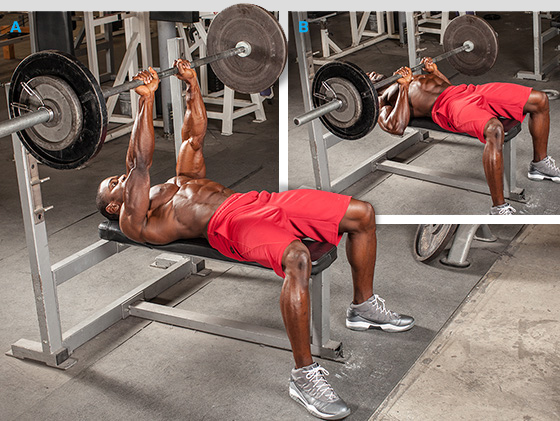

Most arm workouts are frighteningly poorly designed. Let's fix the 4 most common training mistakes on arm day so you can achieve results so good they're scary.
by Bill Geiger Jul 18, 2014
Guys want big arms. That's never more apparent than when you see lines forming at the preacher bench and press-down stations. Most lifters don't come prepared with a plan of attack other than doing as many sets as possible and repeating it again a few days later.
These four common mistakes create a mile-wide gap between people wanting big biceps and triceps and people actually stretching out shirtsleeves. Let's fix them and put together a routine that'll deliver monster results and an even more ferocious pump!
Not sure where to start your arm-day workout? Anyone leading off with concentration curls or triceps press-downs as their preferred mass-building move makes a big mistake.
The Fix
Choose mass-building exercises early in your workout when your energy levels are highest. What are the best mass-building moves? Good question. They're typically the ones in which you can push the most weight. Multi-joint exercises which recruit secondary muscle groups fall into this category (one reason you start your chest workouts with presses and thigh workouts with squats). For triceps, there are a number of multi-joint moves to choose from, but not so for biceps. Basic standing curls allow the biceps to move the most weight.
When training arms, "angles" refers to your arm position relative to your torso as well as your grip. If you always do your curls or triceps extensions with your arms locked by your sides, you limit your gains.
The Fix
For biceps, with your arms in front of your torso (think preacher curls), you target more on the biceps' short head; when your arms are behind your torso (think incline bench dumbbell curls), you better focus on the long head. Likewise, using a neutral grip (hammer curls) and taking a closer or wider grip on the barbell during standing curls each recruits the arm flexors in slightly different ways.
For triceps, when your arms are overhead you better target the long head, while going from an overhand to an underhand grip (as when doing press-downs) shifts the emphasis from the lateral to medial head.
In sum, using a variety of grips and arm positions better emphasizes the various heads of your bis and tris for more complete development.
Many trainees choose a weight, usually one in which they can do for a set of 10, rest and repeat. That's another mistake.
The Fix
"Pick challenging weights to reach muscle failure at the lower end."
Recall that heavier weights for low reps (fewer than 6) promote optimal increases in strength, and moderate weights for moderate reps (8-12)—as long as they're done to failure—are best for muscle growth.
The target musculature quickly becomes accustomed to doing the same rep sequence, such as when you do all your sets to 10 reps. Since you're stronger earlier in your workout, that's the time to challenge your muscles with heavier weights on the best mass-building moves you already selected.
Pick challenging weights to reach muscle failure at the lower end (as few as 6 reps). Over the course of your workout, select slightly lighter weights so you fail at 8, 10 or even 12 reps; this allows you to work the muscle with different relative intensities. Hence, you progress from very heavy weights on the mass-building moves to lighter weights to pump the muscle on the isolation exercises.

Do you do the same workout over and over again and expect different results? That's a common mistake some would call insane.
The Fix
Your body eventually adapts to a particular routine—even if it worked great in the beginning. Most people need to make changes in their workouts at least every 6-8 weeks to help progress through a training plateau.
One way to push past a plateau is to include advanced training techniques that require you to work past muscle failure on 1-2 sets per exercise. Among the techniques you can try are forced reps, dropsets, rest-pause, and negatives.
Supersets—the technique presented below—require that you do two exercises back-to-back with no rest in between; you rest only after you finish both exercises. While you might not consider supersets a mass-building technique, in this workout you do them joining antagonist muscle groups—while one is flexed, the other is stretched—which forces even more blood into the target region.